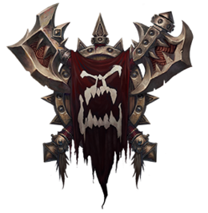

What is The Warsong Project?

The idea behind this project, is to make a "tribute page/site" of sorts,
based on the legendary Orc Clan, "The Warsong" from the "Warcraft" universe.
They were first led by the mighty and feared Grommash Hellscream. He led the
war campaigns against the ogres and later, the demons of Sargeras.
Grommash died a hero´s death, after he and fellow Orc, Thrall defeated the demon
lord, Mannoroth, whom´s blood Grommash had consumed to obtain un-imaginable rage
and strength, making him even more powerful than he was to begin with.
But with a cost. His sanity.
After Grom´s death, his son, Garrosh took over as the head of the Warsong Clan.
But all of this will be made much more clear and will be explained in detail, on
Grommash and Garrosh´s stories on this site.
NOTE! This is all fanboy stuff, there´s absolutely NO expectations and/or desires
of profits are expected or wanted. This is site has been made purely for testing our
programming skills and to keep pushing our boundaries and abilities to the maximum,
to be able to bring you the best site possible.
We very much hope that you will enjoy venturing this site as we have making it.
Many more features will be included in time, so stay tuned Peon!
Lok´tar Ogar!
Death to the puny Alliance!